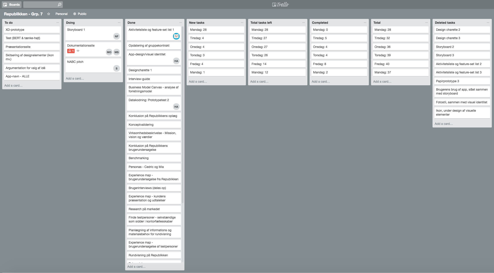
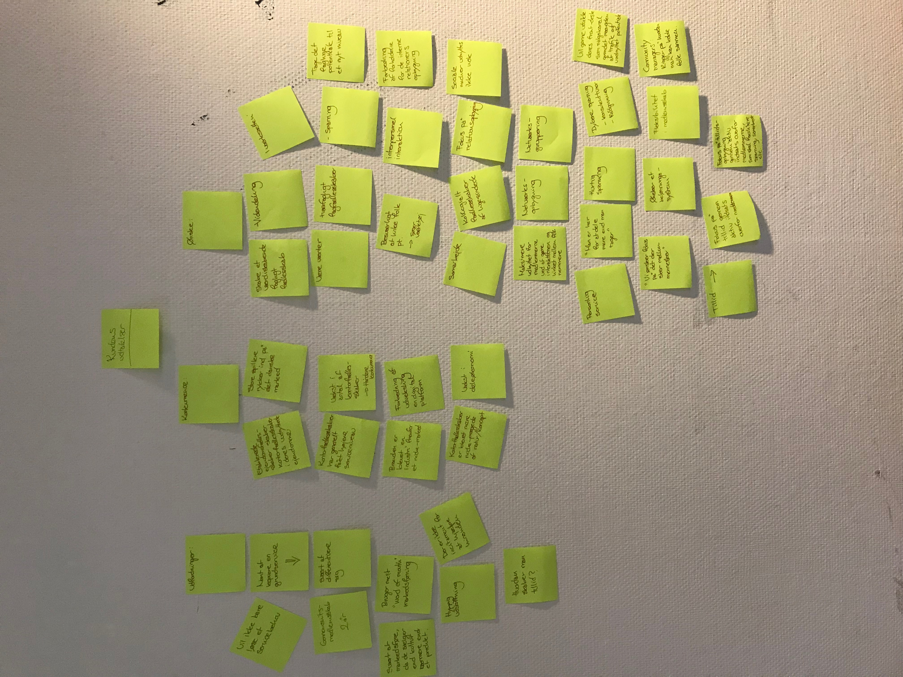
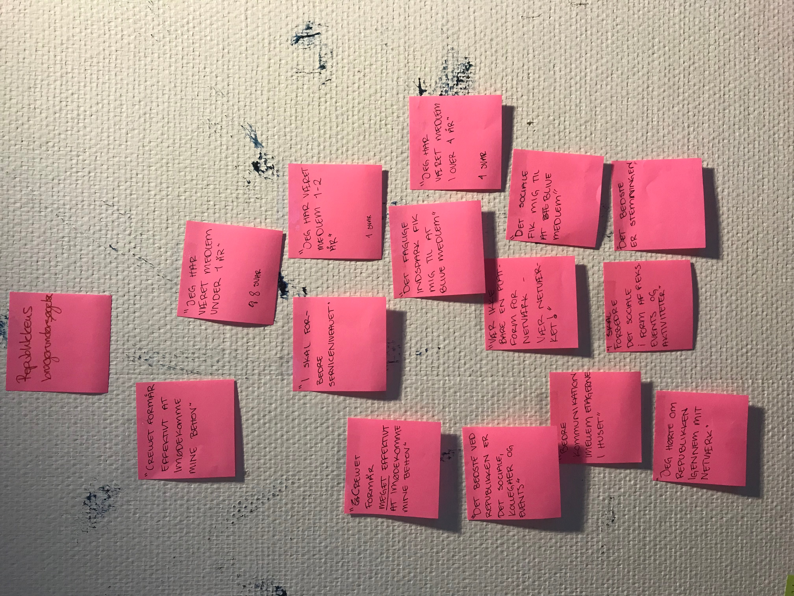
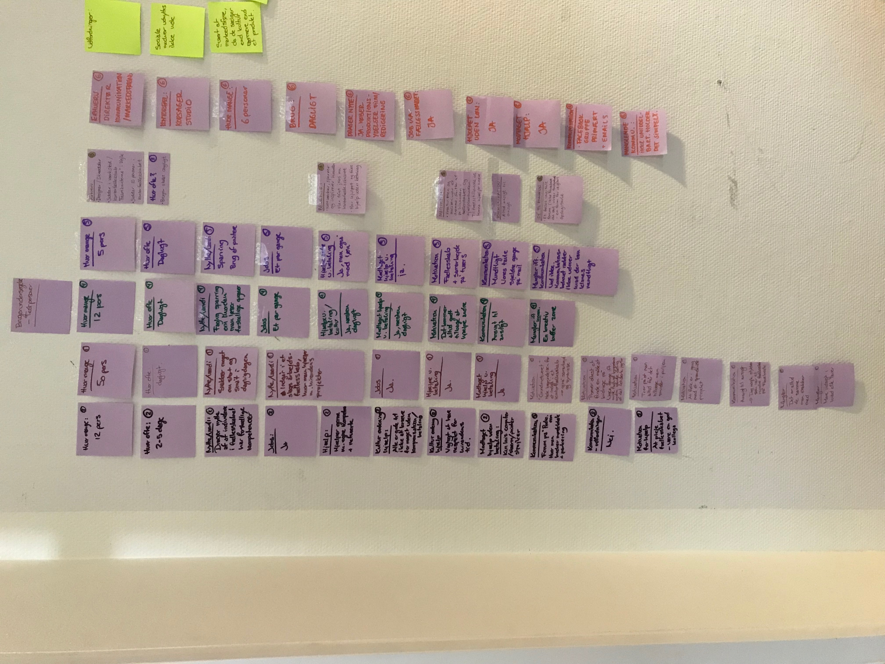
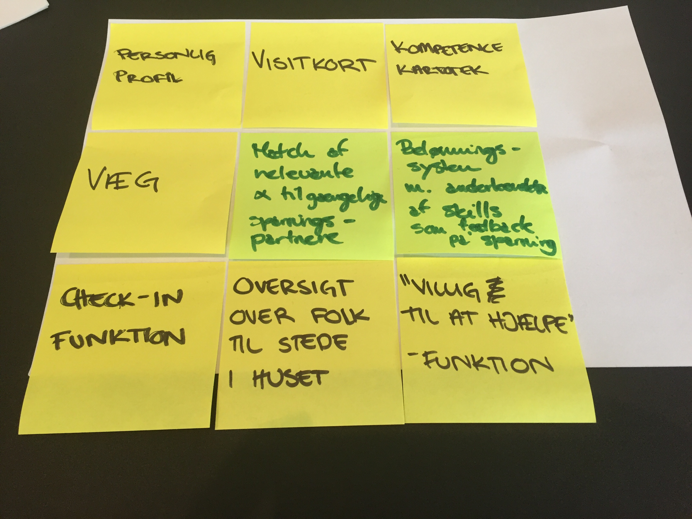
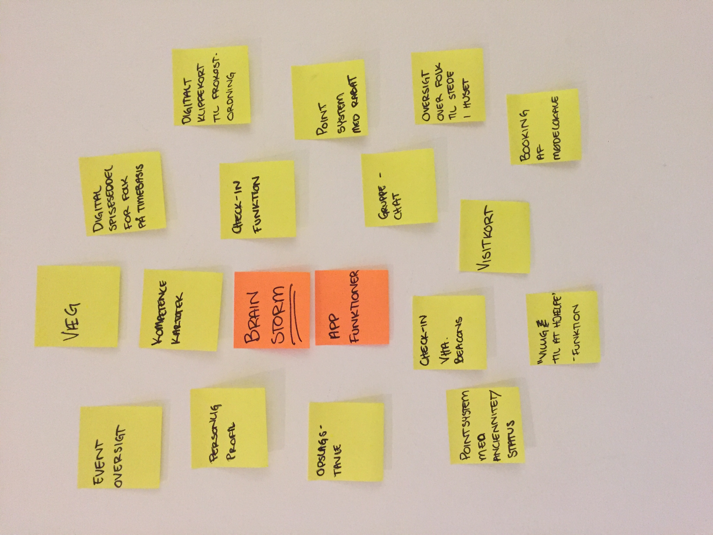
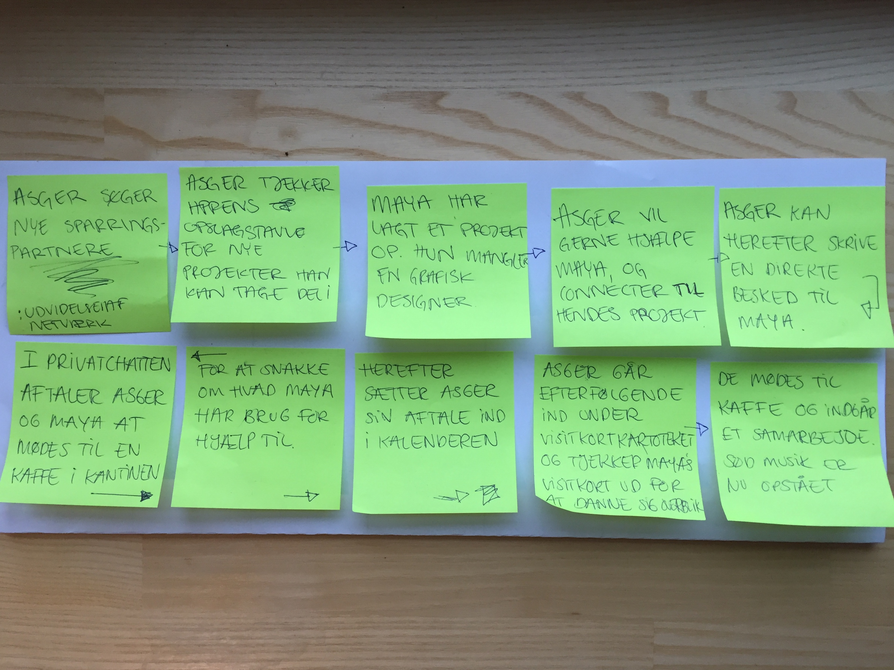

Trello-board
Fra dag et og gennem hele forløbet med vores virksomhedscase, har vi benyttet os af Trello. Det har hjulpet os med at danne overblik over opgaverne og vi har løbende skrevet ned hvilke opgaver der er blevet løst fra dag til dag, med henblik på at putte det ind i vores Burn-Down Chart.
Scrum
Sammen med Trello har vi benyttet os af Scrum-møder. Dette var mest effektivt i starten af forløbet, men efterhånden som vi kom længere ind i opgaven, oplevede vi mandefald i gruppen pga. sygdom. Vi fandt os pludselig et sted, hvor vi var tidspressede og ofte sad vi kun få fra gruppen fysisk samlet.
På dette tidspunkt i forløbet, afholdt vi daglige møder om vores process, både om morgenen og løbende om dagen, men pga. tidspresset har vi ikke fået optaget Scrum-møderne i sidste del af arbejdsfasen.
Der følger hermed et link til YouTube, hvor vi har vores første Scrum-møder liggende.
Burn-down chart

Dataindsamling
Experience Map
-
Virksomhedens udtalelser
 -
Republikkens undersøgelse
 -
Brugerundersøgelse

Virksomhedens udtalelser
Efter gennemgang af kundens præsentation af virksomheden og oplægget til opgaven, har vi valgt at koge udtalelserne ned til følgende:
Udfordringer
Republikkens medlemmer er der i gennemsnit i max 2 år og der er derfor hyppig udskiftning.
Det kan være nemt at kopiere en grundservice, men svært at differentiere sig med den hårde konkurrence der er kommet. Det er svært for dem at markedsføre sig, da de nærmere sælger en kultur end et produkt. Derfor er deres primære markedsføring “word-of-mouth”.
Som det er lige nu, er der ikke rigtig incitament for at medlemmerne hjælper hinanden, så hvordan hjælper de med det? Og hvordan skaber de mere tillid?
Pt. er det besværligt at linke folk og de søger et værktøj der kan afhjælpe dette problem.
Konkurrence
I takt med udviklingen af den digitale verden, er der de seneste 5-10 år set en stor vækst indenfor kontorfællesskaber som er niche-prægede af natur/koncept.
Mange store spillere rykker ind på det danske markedet. Etablerede ejendomsvirksomheder skaber kontorfællesskaber i deres uudnyttede ejendomme og oftest er det meget kliniske kontorfællesskaber, ulig Republikkens stil som er mere “rodet” og kreativ.
Disse typer kontorfællesskaber har generelt fået et højere serviceniveau og branchen er blevet en industri, fremfor et nichemarkedet.
Ønske
Kunden ønsker at være værter og yde en personlig service overfor deres medlemmer. De ønsker et værdiskabende fagligt fællesskab med vidensdeling, iværksætteri, sparring, tværfaglige fællesskaber, samarbejde, netværksgrupperinger, netværksopbygning, hurtig sparring og kollegialt fællesskab af ligesindede.
De ønsker også at maksimere udbyttet for medlemmerne, ved at gøre interaktionen og linket mellem folk nemmere - at tage det faglige potentiale til et nyt niveau. Som det er lige nu udnyttes sociale medier ikke nok.
Ligeledes ønsker de at forbedre forholdene for de interne relationers opbygning. De vil gerne have fokus på tillid og tillidsopbygning gennem aktiv indsats over for medlemmerne. De vil gerne udvikle deres front-desk som salgskanal grundet mængden af trafik og her ser de et uudnyttet potentiale. Kunden ønsker desuden et beløningssystem.
Key-sætninger:
“Vi ønsker fokus på det der sker mellem mennesker” “Man er her for at dele mere end man tager”
Republikkens brugerundersøgelse
Motivationen: Det faglige indspark og det sociale - følelsen af at have kollegaer
Tilfredshed:
Medlemsloyalitet:
Presset stemning fordi det er svært at tage kontakt til hinanden
Bedre kommunikation mellem etagerne
Vær ikke bare en platform for netværket - vær netværket
Brugerundersøgelse
I bearbejdningen af de opnåede data fra brugerundersøgelsen af vores testpersoner fra målgruppen, er vi kommet frem til følgende delkonklusioner:
Erhvervsmæssig baggrund:
Tendensen ift. hvilke erhverv folk er beskæftigede indenfor, når de benytter sig af kontorfællesskaber, er at folk fortrinsvist er beskæftiget indenfor den kreative branche og er enten selvstændigt erhvervsdrivende eller arbejder freelance.
Størrelsen af kontorfællesskaberne:
Størrelsen af de kontorfællesskaberne som testpersonerne indgår i, er primært mindre og mere intime foretagender på 5-12 personer end Republikken, som har 150 aktive medlemmer.
Hyppigheden af brugen af kontorfællesskabet:
Ud fra undersøgelsen af vores testpersoner fremgår det, at 83,3% af de adspurgte benytter sig af kontorfællesskabet på daglig basis og dermed bruger det som fast arbejdsplads.
Jobs gennem kontorfællesskabet:
Det er en klar tendens, at folk lander jobs igennem det netværk kontorfællesskabet er, hvor 100% af de adspurgte svarer, at de har landet jobs mere end én gang gennem deres kontorfællesskab.
Værdiskabende faktorer:
83% af de adspurgte i undersøgelsen af testpersonerne nævner faglig sparring, hvormed man drager kollektiv nytte af hinandens fagligheder og kompetencer, som den primære værdiskabende faktor ved at være en del af et kontorfællesskab. Dette fungerer som en måde, hvorpå man kan indhente inspiration og rådgivning på igangværende projekter, men også i høj grad som en mulighed for at ens professionelle netværk.
Motivation:
Det er tydeligt, at tendensen ift. motivationen for at hjælpe hinanden, når man indgår i et kontorfællesskab, er en selvfølgelighed. Som en af testpersonerne ytrer - “Som udgangspunkt er jeg vel grund-motiveret. For jeg valgte (og har altid valgt) kontorfællesskaber, netop for at indgå i et samarbejde, og en slags symbiose. Jeg tror altid man får det tilbage man smider i puljen”. Det er tydeligt at faktorerne der vedrører muligheden for samarbejde på tværs af fagligheder og sparring, er de tydeligste værdifaktorer og dermed motivations-givere i et kontorfællesskab. Det ytres ydermere, at ligesind omkring kreativitet og realisering af drømme ligeledes forener folk på tværs af fagligheder. Denne forening i kraft af dette højere formål bidrager yderligere til at give et naturligt incitament for at hjælpe hinanden, da fællesskabet oplever en samhørighed ved at være “i samme båd”. Dernæst er plejen af dette fællesskab også en vigtig motivations-giver for de adspurgte, hvor man ønsker at skabe og værne om en følelse af kollegialitet.
At yde hjælp uden at modtage løn:
Det er en klar tendens, at folk der sidder i kontorfællesskaber, har et naturligt incitament for at yde hjælp i form af sparring og deling af netværk uden at kræve løn - en kollektiv velvillighed, der hersker i denne type fællesskaber. Dette gør sig gældende for 100% af de adspurgte.
Dog er det også en tendens, at der også sideløbende foregår en form for udveksling af kompensation i form ydelser eller lønudbetaling.
Derudover svarer en af testpersonerne, at det er en del af kulturen, at man har en respekt for hinandens tid og ressourcer, og dermed ikke kræver for meget uden at yde kompensation.
At modtage hjælp uden at udbetale løn:
Det er en klar tendens blandt alle de adspurgte, at det er kutyme at man modtager hjælp uden at yde betaling. Dette bevidner igen denne kollektive velvillighed overfor at hjælpe hinanden.
Kommunikationsform:
Den primære tendens indenfor kommunikationsformen i de adspurgtes kontorfællesskaber er ansigt til ansigt, hvilket har en forventelig sammenhæng med den relativt begrænsede størrelse af de fællesskaber, de indgår i. Det lader ikke til, at der forefindes et behov for en formel organisering af kommunikationen, som kan facilitere en nemmere vej til sparring og netværksopbygning. Her kan man argumentere for, at det har sin begrundelse i det faktum, at de adspurgtes kontorfællesskaber er så intime, at man har et mere nært kendskab til fællesskabets individuelle profiler og kompetencer, og dermed hurtigt kan navigere rundt i, hvem man kan henvende sig til, for sparring med den pågældende opgave, man oplever behov for sparring omkring. Af sekundære kommunikationsformer nævner en testperson et tavlesystem og to andre en afgrænset facebookgruppe.
Kommunikationsudfordringer:
Når det kommer til kommunikative udfordringer i de adspurgte testpersoners respektive kontorfællesskaber, er der en klar sammenhæng mellem størrelsen på fællesskabet, den foretrukne kommunikationsform og om hvorvidt der opleves udfordringer med kommunikationsvejene. 50% af de adspurgte mener ikke, at der hersker udfordringer omkring den interne kommunikation i kontorfællesskabet, da kommunikationsbehovet ikke rækker udover det man kan klare ansigt til ansigt.
Dog oplever testperson 1, der som den eneste befinder sig i et markant større kontorfællesskab (50 personer) i stil med Republikken, nogle udfordringer som kan sidestilles med de problematikker Republikken oplever.
Her ytres et ønske om at søge indsigt og skabe sig overblik over folks profil, projekter og kompetencer, fordi kontorfællesskabet simpelthen er af for stor en størrelse til at man kan skabe sig dette overblik.
I tråd med dette opleves også, at man hurtigt grupperes i mindre fællesskaber, hvor det kan være svært, at række udover den pågældende gruppe, hvormed man ofte ender med, at det er de samme personer man socialiserer med og henvender sig til for sparring.
Disse pointer følger godt i tråd med det definerede pain point og Republikkens nuværende udfordringer omkring at maksimere værdien for medlemmerne, når det kommer til udnyttelse af det faglige potentiale de huser i takt med at arbejdsfællesskabet vokser og bliver mere mangfoldigt.
33% af de adspurgte giver derudover til kende, at de godt kunne bruge initiativer, der kunne fremme og forbedre kommunikationen af forskellige veje. Når det gælder forslag til initiativer, foreslås et forum for kommunikation, en fælles digital opslagstavle og en “kreativ buffer-zone”.
Persona
Ud fra vores analyse af brugerundersøgelserne, har vi valgt at lave to potientelle personaer, som vi bruger til vores udvikling af idé til appen.
Virksomhedsbeskrivelse
Republikken er et mangfoldigt og kreativt arbejdsfællesskab, som tilbyder kontorfaciliteter, mødelokaler og arbejdsro til dem, der vil arbejde selvstændigt i uformelle rammer. Her bliver man en del af et kollegialt netværk, inviteres til faglige og sociale event og har adgang til både workspace, fælles morgenmad, frokostordning og prototypeværksted.
Mission
Republikkens mission er at skabe et kreativt sted, hvor mennesker og firmaer vokser, hvor ideer interagerer og hvor det føles godt at gå på arbejde.
Vision
Deres vision er at skabe verdens bedste arbejdsfællesskab for passionerede selvstændige og små firmaer.
Værdier
- Tillid
- Samarbejde
- Rumlighed
- Inkludering
- Respekt
- Fællesskab
- Tværfaglighed
- Personlig udvikling
- Kollektiv udvikling
- Kreativitet
- Passion
- Nysgerrighed
Business Model Canvas
Idé - R-Connect
Pain Point
I takt med at Republikkens medlemsskare vokser og bliver mere mangfoldig, opleves der strukturelle udfordringer omkring at skabe rammerne for kommunikation med henblik på netværksdannelse og socialisering internt i arbejdsfællesskabet, således at medlemmerne føler at de opnår maksimalt udbytte af det faglige potentiale, som Republikken rummer
Design charette
- 
- 
Storyboard
Idégrundlag
Brugssituationer
- Når man har brug for faglig sparring
- Når man har brug for at udvide sit netværk
Aktiviteter & features
Profil
- Foto
- Navn
- Status: tilstede / ikke-tilstede
- Status: aktiv for sparring
- Kompetence / information
- Kompetence beskrivelse
- Kompetence tags
- Projekt oversigt
- Besked
- Visitkortkartotek knap
- Beskeder (under profil)
- Chat oversigt
- Projekt chat oversigt
Visitkortkartotek
- Viser de personer man har connect projekter med i form af visitkort.
- Søge knap/funktion
Kalender
- Daglig kaldener
- Månedlig kalender
- Swipe-funktion mellem ugedage
- Søge knap
- Tilføj begivenheder/møder knap
- Republikkens begivenheder mærkes i den månedlige kalender med et lille symbol
Tilføj projekt
- Projekt beskrivelse
- Tilføj søgte kompetencer
- Tilføj billede
- Del projekt
- Forhåndsvisning af projekt-post, hvorefter man bliver ført videre til opslagstavlen
Opslagstavle
- Udforsk alle side
- Udforsk kompetencer side
- Søg knap
- Opslagstavle med medlemmers projekter
- Connect knapper til hvert medlems opslag
Udforsk fælleskab
- søgefelt (navn, kompetencer, virksomhed)
- Kompetencebox hvor der kan krydses ønskede kompetencer af
- Efter man har søgt bliver man stillet om til en side der viser de fundende brugeres visitkort
Konceptvalidering
Hvem er målgruppen?
- Kvantificer størrelsen på målgruppen - kan den skaleres op?
Målgruppen er på nuværende tidspunkt Republikkens brugere. Selve applikationen er udviklet designmæssigt, så den henvender sig til Republikkens medlemmer som er ca. 150 personer. Ved at skalere app’en yderligere op, kan den udvikles til også at kunne benyttes af Republikkens tidligere medlemmer og dermed udvides målgruppen. Selve interfacet, kan i princippet bruges til andre kontorfællesskaber, der ønsker et sparringsforum for deres medlemmer.
Forstår målgruppen vores løsning?
Da vi ikke kan teste direkte på vores tænkte målgruppe (Republikkens medlemmer) har vi været nødt til at teste på vores medstuderende, men med den fordel, at de også kender til Republikkens problematikker ift. at connecte folk.
(HER SKAL NOGET MERE TEKST IND OMKRING SELVE TESTEN AF APPEN PÅ TESTPERSON)
Hvilken værdi vil løsningen give virksomheden?
Via vores brugerundersøgelser, har vi fundet ud af, at Republikkens medlemmer efterspørger et forum, hvor de kan videndele og sparre mere med hinanden. Som det er lige nu, er det virksomhedens ansatte der connecter folk face-to-face.
Ved at lave en app der samler Republikkens medlemmer, skaber vi en værdi for virksomheden, ved at efterkomme deres medlemmers ønsker, samt give Republikken mulighed for at samle deres medlemmer, i et virksomhedspersonligt forum.
Hvilken værdi giver den målgruppen?
- Spørg dem eksempelvis “hvad ville du give for det”
Appen giver brugeren mulighed for at udvide deres netværk og styrke deres kompetencer via sparring med andre. Ved at skabe nye arbejdsmæssige relationer og ved at connecte med andre medlemmer af Republikken, vil denne app afhjælpe nogle af de problematikker som målgruppen har efterspurgt.
Kan udviklingen lade sig gøre? Eller er vi afhængige af teknologi, der ikke er moden endnu?
- Prøv at kvantificere (budget)
Applikationen kan sagtens lade sig gøre med den nuværende teknologi. Meget af den data der skal bruges, findes allerede på kundens hjemmeside og lægger sig også op af andre sociale platforme, i form af brugerprofiler, chatrum og kartoteker.
Inden for hvilken tidshorisont kan det realiseres?
Selve appen bør ikke tage lang tid at udvikle. Der vil skulle testes på mere relevant målgruppe i en beta-udgave før endelig udvikling. Det der kan tage længere tid er, at få Republikken medlemmer til at downloade, lære at bruge- og implementere app’en som et reelt værktøj i dagligdagen.
Har andre allerede realiseret en tilsvarende løsning?
En af vores testpersoner og dennes kontorfællesskab benytter sig af Podio.com - en samlet løsning til både web og mobil. Da vi desværre ikke har adgang til denne platform, har vi ikke kunne teste om hvorvidt den lægger sig helt op af vores applikation. Platforme som LinkedIn og Facebook har også delvist elementer som minder om vores app, men ikke på samme måde enkel og kun målrettet én specifik målgruppe som vores.
Usability test
Afspil video
Valg af idé
I starten af vores design cheretter, havde vi et par forskellige idéer på bordet. Ret hurtigt kunne vi se, at alle idéerne lagde sig op af hinanden. Grundet vores store baggrundsarbejde med brugerundersøgelser og ud fra besøget hos kunden, blev vi enige om at holde os til vores primære idé. Dette også grundet tidspres pga. mandefald i gruppen.
Vi valgte derfor at arbejde intensivt på kun én idé fremfor at bruge i forvejen sparsom tid, på at udvikle og idégennerer på ydeligere to andre idéer.
Vi har alligevel valgt at benchmarke vores endelige idé.
Benchmark
| Målgruppens størrelse | Målgruppens skalerbarhed | Værdien for virksomheden | Værdien for målgruppen | Realiserbarhed | Konkurrence | Total | |||||||
| Vægtning | Score | Vægtning | Score | Vægtning | Score | Vægtning | Score | Vægtning | Score | Vægtning | Score | ||
| R-Connect | 0,5 | 1 | 0,4 | 2 | 0,8 | 2 | 1 | 3 | 0,7 | 3 | 0,6 | 2 | 9,2 |
Argumentation
R-connect
Pitch
NABCA-modellen
Fang opmærksomheden!
I disse tider popper kontorfællesskaber op i København som ukrudt på en våd græsplæne om sommeren. Så hvordan skiller man sig ud som den tronede rose, i dette virvar af muligheder?
Needs - Hvilke behov dækkes?
I takt med at Republikkens medlemsskare vokser og bliver mere mangfoldig, opleves der strukturelle udfordringer omkring at skabe rammerne for kommunikation, med henblik på netværksdannelse og socialisering internt i arbejdsfællesskabet. Der mangler en platform, som samler alle under ét tag, som både rummer private samtaler og åbne forummer, de forskellige events og fester, og som samtidig indleder til kreativ og professionel sparring, således at medlemmerne føler at de opnår maksimalt udbytte af det faglige potentiale, som Republikken rummer.
Via vores brugerundersøgelser, har vi fundet ud af, at Republikkens medlemmer efterspørger et forum, hvor de kan sparre mere med hinanden og dele kreative ideer. Som det er lige nu, er det virksomhedens ansatte der connecter folk face-to-face. Her har vi skabt appen WorkTie, som vil gøre netværket stærkere og hjælpen mere tilgængelig.
Approach - Hvordan dækkes behovene?
WorkTie er bygget op omkring et overskueligt og simpelt design, som tager udgangspunkt i Republikkens i forvejen simple design og brug af farver.
Første gang man åbner appen, skal man logge ind med et personligt brugernavn og adgangskode. Appen benytter sig af en beacon funktion, som noterer når medlemmet er til stede på Republikken. Når man er logget ind i app’en, vil man blive spurgt om man er ‘åben for sparring’, hvilket betyder om man ønsker at hjælpe andre som har brug for hjælp eller om man ønsker fred til at arbejde.
Opslagstavlen har to funktioner:
1 - Den viser opslag fra andre medlemmer der ønsker hjælp til et projekt som kræver profilen/brugerens kompetencer.
2 - Alle opslåede projekter, også dem som går ud over ens egne kompetencer.
Man skal blot trykke på ‘connect’-knappen, hvis man ønsker at hjælpe et medlem med deres projekt, hvilket skaber en nem og hurtigt måde at kommunikere på. Man kan både kommunikere med andre via en projektsamtale eller man kan skrive sammen privat.
Hvis man selv ønsker hjælp til et projekt, trykker man på ‘opret projekt’-knappen, hvor man laver en beskrivelse af projektet og angiver hvilke kompetencer projektet kræver. Derefter kommer der et preview frem, hvor man også kan se forslag til personer med de ønskede kompetencer som er angivet som ‘åben for sparring’.
På profilsiden kan man angive ens oplysninger og kompetencer og ændre status for ‘åben for sparring’. Man kan også se en oversigt over hvem man har connectet med og deres oplysninger, ligesom man via søgefunktionen kan søge efter medlemmer med bestemte kompetencer.
I kalenderen kan man få en oversigt over både private arrangementer, events oprettet af Republikken og andre arrangementer man er blevet inviteret til af andre medlemmer.
Benefits - Hvad får brugeren ud af det?
WorkTie giver Republikkens medlemmer mulighed for at udvide deres netværk og styrke deres kompetencer via sparring med andre. Ved at skabe nye arbejdsmæssige relationer og ved at connecte med andre medlemmer af Republikken, vil denne app afhjælpe nogle af de problematikker som målgruppen har efterspurgt. Det vil nu blive meget nemmere at komme i kontakt med andre med samme interesse og få hjælp til at danne et overblik over hvem- og hvad der sker rundt omkring i huset. Man kan hurtigt få hjælp til mindre problemer eller inddrage flere medlemmer i en projektsamtale, hvor alle kan sparre med hinanden.
Ved at lave en app der samler Republikkens medlemmer, skaber vi en værdi for virksomheden, ved at efterkomme deres medlemmers ønsker, samt give Republikken mulighed for at samle deres medlemmer, i et virksomhedspersonligt forum. Samtidig kan det frigive tid fra crewet som pt. er bindingsled mellem medlemmerne og så de får bedre mulighed for at yde mere service, som flere medlemmer også efterspørger.
Competition - Bedre end alternativerne!
WorkTie er en super simpel og nem app, som vil gøre hverdagen lettere og det sociale netværk stærkere. Kommunikation, som førhen har foregået over mail og facebook, samles nu i én platform, og gør det nemmere at finde information om hver enkelte person og deres projekter. Med app’en skal man ikke være bange for at gå glip af et arrangement, da der nu er fuldt overblik over alt hvad der sker rundt omkring i huset, hvilket var meget upræcist førhen.
Action - Opfordring til handling:
Vi har løsningen som vil gøre Republikken endnu mere unik og styrke kollektivet og fællesskabet, både fagligt og socialt! Med WorkTie appen, vil det blive meget nemmere for jeres medlemmer og ansatte, at sparre med hinanden i hverdagen, da de med få klik kan oprette nye projekter, chatte både privat og i fællesskab, se en oversigt over både egne og andres events, og begivenheder oprettet af Republikken selv.
<
Needs - Hvilke behov dækkes?
I takt med at Republikkens medlemsskare vokser og bliver mere mangfoldig, opleves der strukturelle udfordringer omkring at skabe rammerne for kommunikation, med henblik på netværksdannelse og socialisering internt i arbejdsfællesskabet. Der mangler en platform, som samler alle under ét tag, som både rummer private samtaler og åbne forummer, de forskellige events og fester, og som samtidig indleder til kreativ og professionel sparring, således at medlemmerne føler at de opnår maksimalt udbytte af det faglige potentiale, som Republikken rummer.
Via vores brugerundersøgelser, har vi fundet ud af, at Republikkens medlemmer efterspørger et forum, hvor de kan sparre mere med hinanden og dele kreative ideer. Som det er lige nu, er det virksomhedens ansatte der connecter folk face-to-face. Her har vi skabt appen CoCreate, som vil gøre netværket stærkere og hjælpen mere tilgængelig.
Approach - Hvordan dækkes behovene?
CoCreate er bygget op omkring et overskueligt og simpelt design, som tager udgangspunkt i Republikkens i forvejen simple design og brug af farver.
Første gang man åbner appen, skal man logge ind med et personligt brugernavn og adgangskode. Appen benytter sig af en beacon funktion, som noterer når medlemmet er til stede på Republikken. Når man er logget ind i app’en, vil man blive spurgt om man er ‘åben for sparring’, hvilket betyder om man ønsker at hjælpe andre som har brug for hjælp eller om man ønsker fred til at arbejde.
Opslagstavlen har to funktioner:
1 - Den viser opslag fra andre medlemmer der ønsker hjælp til et projekt som kræver profilen/brugerens kompetencer.
2 - Alle opslåede projekter, også dem som går ud over ens egne kompetencer.
Man skal blot trykke på ‘connect’-knappen, hvis man ønsker at hjælpe et medlem med deres projekt, hvilket skaber en nem og hurtigt måde at kommunikere på. Man kan både kommunikere med andre via en projektsamtale eller man kan skrive sammen privat.
Hvis man selv ønsker hjælp til et projekt, trykker man på ‘opret projekt’-knappen, hvor man laver en beskrivelse af projektet og angiver hvilke kompetencer projektet kræver. Derefter kommer der et preview frem, hvor man også kan se forslag til personer med de ønskede kompetencer som er angivet som ‘åben for sparring’.
På profilsiden kan man angive ens oplysninger og kompetencer og ændre status for ‘åben for sparring’. Man kan også se en oversigt over hvem man har connectet med og deres oplysninger, ligesom man via søgefunktionen kan søge efter medlemmer med bestemte kompetencer.
I kalenderen kan man få en oversigt over både private arrangementer, events oprettet af Republikken og andre arrangementer man er blevet inviteret til af andre medlemmer.
Benefits - Hvad får brugeren ud af det?
CoCreate giver Republikkens medlemmer mulighed for at udvide deres netværk og styrke deres kompetencer via sparring med andre. Ved at skabe nye arbejdsmæssige relationer og ved at connecte med andre medlemmer af Republikken, vil denne app afhjælpe nogle af de problematikker som målgruppen har efterspurgt. Det vil nu blive meget nemmere at komme i kontakt med andre med samme interesse og få hjælp til at danne et overblik over hvem- og hvad der sker rundt omkring i huset. Man kan hurtigt få hjælp til mindre problemer eller inddrage flere medlemmer i en projektsamtale, hvor alle kan sparre med hinanden.
Ved at lave en app der samler Republikkens medlemmer, skaber vi en værdi for virksomheden, ved at efterkomme deres medlemmers ønsker, samt give Republikken mulighed for at samle deres medlemmer, i et virksomhedspersonligt forum. Samtidig kan det frigive tid fra crewet som pt. er bindingsled mellem medlemmerne og så de får bedre mulighed for at yde mere service, som flere medlemmer også efterspørger.
Competition - Bedre end alternativerne!
CoCreate er en super simpel og nem app, som vil gøre hverdagen lettere og det sociale netværk stærkere. Kommunikation, som førhen har foregået over mail og facebook, samles nu i én platform, og gør det nemmere at finde information om hver enkelte person og deres projekter. Med app’en skal man ikke være bange for at gå glip af et arrangement, da der nu er fuldt overblik over alt hvad der sker rundt omkring i huset, hvilket var meget upræcist førhen.
Action - Opfordring til handling:
Vi har løsningen som vil gøre Republikken endnu mere unik og styrke kollektivet og fællesskabet, både fagligt og socialt! Med CoCreate appen, vil det blive meget nemmere for jeres medlemmer og ansatte, at sparre med hinanden i hverdagen, da de med få klik kan oprette nye projekter, chatte både privat og i fællesskab, se en oversigt over både egne og andres events, og begivenheder oprettet af Republikken selv.
Moodboard

Styletile

Visuel identitet
Vores opgave er at designe en brugergrænseflade til Republikkens kunder og ansatte. Menneskene på Republikken er unge og moderne folk og eftersom at den moderne brugers præferencer, med tiden, skifter til enklere brugergrænseflader, har vi valgt at strippe brugergrænsefladen ned til dens meget grundlæggende elementer. Vi har valgt at lave det minimalistisk da det er det perfekte ægteskab mellem form og funktion. Vi har brugt rene linjer, white space og minimale grafiske elementer, som giver enkelthed til brugergrænsefladen.
Vores design er kortfattet og konsekvent, og gør derfor brugergrænsefladen brugbar. Vha. af klar visuel kommunikation løser interaktionssystemet brugerens problemer. Derfor har vi lavet en smuk minimalistisk app kombineret med stor brugervenlighed: En nem og enkel app med en kraftfuld form for kommunikation.
Vi har valgt at bruge Helvetica Neue Regular og Medium da det indgår i Republikkens designmanual. Og har valgt kun at bruge dem for ikke at blande flere forskellige skrifttyper, så app’en bliver sjusket. Ved at reducere antallet af skrifttyper på skærmen, afsløres kraften i typografien. Vi har tænkt på hvordan vi kan gøre typografien kraftfuld ved at spille med vægt og størrelse, og ikke forskellige skrifttyper.
Vi har valgt at bruge Republikkens egen mørkeblå og lakserøde farve, da det indgår i deres designmanual. Men ift. farver har vi fjernet meget for at tillade indholdet at tage centrum. Og så har vi modvirket dette ved at øge farven i de ydre brugergrænseflader som f.eks. på startskærmen.